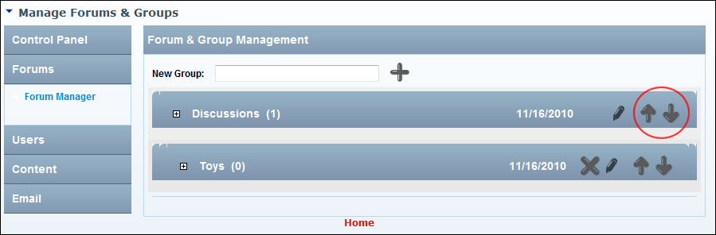

Re-Ordering Forum Groups
How to modify the view order of forum groups on the Forum module.
- Go to the Forum Administration page. See "Navigating to the Forum Admin Page"
- In the left-hand panel, select Forums > Forum Manager. This displays the Forum and Group Management window.
- Click the Move Up
 or Move Down
or Move Down  button beside a forum group to move it up or down one position respectively.
button beside a forum group to move it up or down one position respectively.

Reordering Forum Groups